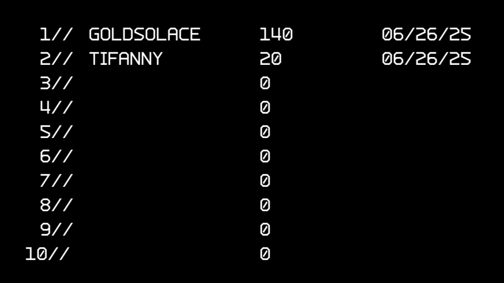
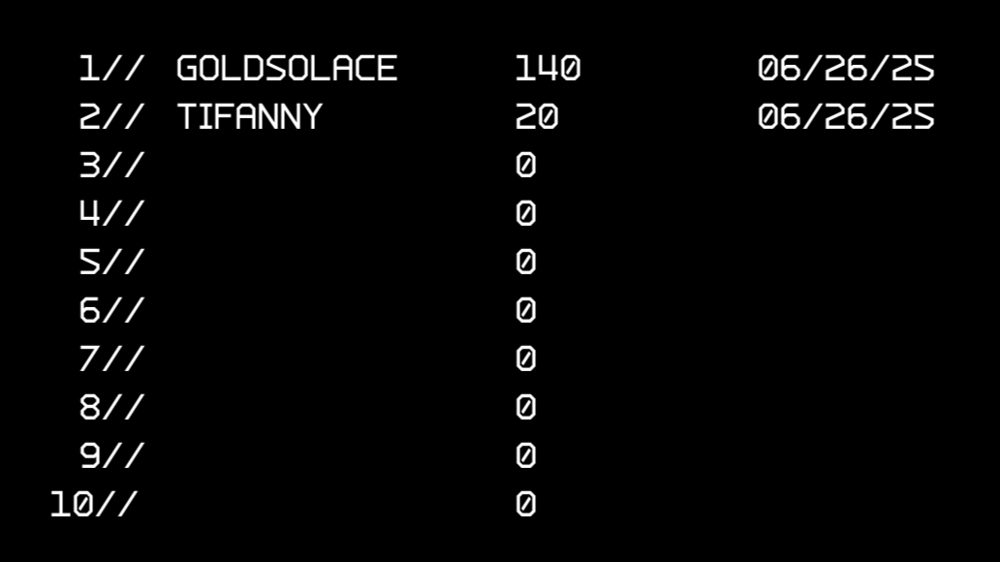

About the Game
This version of Asteroids is a reinterpretation of the classic arcade game, developed as the final project for the first year of the Videogame
Programming degree at ESAT. The project was built using ESAT's own graphics library and not only faithfully recreates the original gameplay,
but also expands upon it with new features and modern improvements.
One of the main features of this version of Asteroids is the implementation
of a user system, which allows players to create personal accounts to access the game. This enabled the development of individual save files per user,
making it easy to continue games across different sessions without losing progress.
The game also includes an admin menu, accessible only through
a specific username and password. From this exclusive interface, all registered accounts can be viewed and managed, adding a layer of administration and
control useful for keeping the system organized.
In addition, a leaderboard screen has been implemented, displaying the top players based on their
in-game performance. This encourages competitiveness and motivates players to improve their scores.
In terms of gameplay, several enhancements have
been added to enrich the experience. During a session, players can access a pause menu, from which they can save progress or enter the game's internal shop.
This shop allows players to spend points earned during gameplay to acquire special upgrades. These include the extra life upgrade, which grants an additional
life, and the bomb upgrade, a powerful tool capable of eliminating all enemies on screen. These upgrades can also occasionally be found in-game as random pick-ups,
adding an extra layer of surprise and strategy.
Screenshots
 

Key Features
- User system.
- Admin menu.
- Player ranking.
- Pause menu.
- Pick-ups.
- Upgrades & shop.
- Data save system.
Play the Game
Download the gameCredits
Game developed by Rodrigo Micó Pliego.